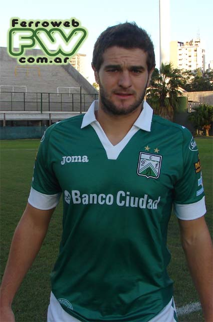
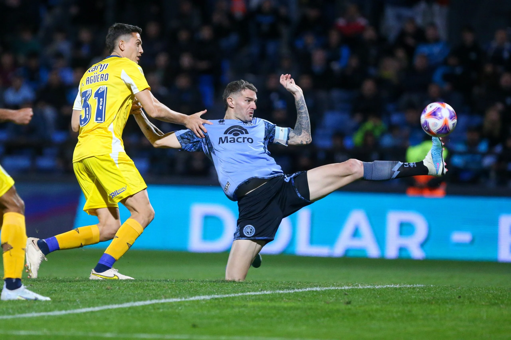

Pablo Vegetti
Pablo Ezequiel Vegetti Pfaffen (Santo Domingo, 15 de outubro de 1988) é um futebolista argentino que atua como centroavante.
Atualmente joga no Vasco da Gama.
Após se destacar por clubes amadores da Argentina, o centroavante (que não fez base em nenhuma equipe, já que pretendia fazer faculdade de
Ciências Contábeis e de Educação Física)[6], ingressou tardiamente no futebol profissional - com 23 anos - através do modesto Villa San Carlos
em 2012.
Suas atuações chamaram a atenção do Rangers de Talca, clube da Primeira Divisão Chilena. No país vizinho, o jogador teve uma passagem curta e
sem brilho, voltando ao país natal para disputar a Primera B Nacional (segunda divisão argentina) pelo Ferro Carril Oeste, após apenas seis
meses no Chile.

Apesar dos números tímidos (seis gols em 21 jogos) na equipe do Ferro Carril, o atacante chamou a atenção do Gimnasia La Plata que o contratou
em julho de 2014. Após o fim da temporada, o centroavante foi emprestado à equipe do Colón, clube do qual o atacante nunca escondeu ser um
torcedor. Após isso passou por outros clubes como Boca Unidos, Instituto Central Córdoba até chegar ao Belgrano.

Vegetti chegou ao Belgrano em 2019 para a disputa da Primera B Nacional, e logo em sua temporada de estreia pela equipe celeste, fez questão de
afastar a desconfiança através dos seus gols, marcando 17 vezes em 28 jogos, sem conseguir entretanto o acesso a elite do futebol argentino.
Na temporada seguinte, o centroavante manteve a boa média de gols com 16 tentos em 31 partidas, sendo o vice-artilheiro da competição, porém
ainda não obteve o desejado acesso
Em 2022, foi o principal nome da campanha do título inédito e acesso à elite do Campeonato Argentino, sendo o capitão da equipe e artilheiro da
competição com 17 gols. Em 2023, o jogador viveu aos 34 anos o melhor momento de sua carreira até então, sendo o artilheiro do Campeonato
Argentino, se tornando assim o primeiro jogador a ser artilheiro das duas principais divisões do futebol argentino em anos seguidos e também
o primeiro jogador a alcançar a artilharia das três principais divisões do futebol argentino.

Em 4 de agosto de 2023, foi anunciado como novo reforço do Vasco da Gama. O centroavante argentino de 34 anos, foi adquirido junto ao Belgrano
por 1,1 milhão de dólares e assinou contrato até julho de 2024.
O jogador chegou ao clube numa quinta-feira e teve somente dois dias de treino
antes de sua estreia, onde vindo do banco de reservas, precisou de apenas 16 minutos em campo para marcar o gol da vitória de sua equipe por
1-0 sobre o Grêmio e encerrar um jejum de quase 8 jogos (mais de 700 minutos) do Vasco sem marcar um gol em São Januário, se tornando ainda o
primeiro argentino a marcar o gol da vitória em uma estreia pelo Campeonato Brasileiro.No jogo seguinte, diante do Red Bull Bragantino, o
atacante marcou novamente, ajudando sua equipe a conseguir um importante empate por 1–1 fora de casa pelo certame nacional.
O Pirata (recebeu esse apelido após comemorar cobrindo um dos olhos com a mão, referenciado seu clube anterior) continuou a exibir bom
futebol, participando de todos os gols do Vasco durante as 5 partidas que fez inicialmente, e, no dia 10 de setembro de 2023, o atacante foi
comprado pela equipe vascaína. O contrato, inicialmente de empréstimo, já previa a compra mediante o valor de 1,1 milhão de dólares.
Seu contrato então valerá até 2025.
Vegetti foi essencial para a permanência da equipe vascaína na primeira divisão. Atualmente com 32 jogos, 15 gols e 2 assistências
 da Gama
da Gama